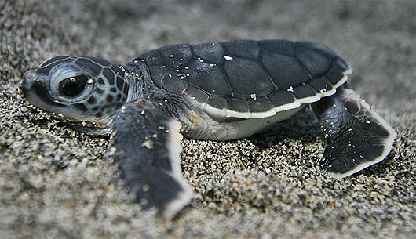

Baby turtle emerging the nest
Hatchlings use the natural light horizon, which is usually over the ocean, along with the white crests of the waves to reach the water when they emerge from the nest. Any other light sources such as beachfront lighting, street lights, light from cars, campfires etc. can lead hatchlings in the wrong direction, also known as disorientation.